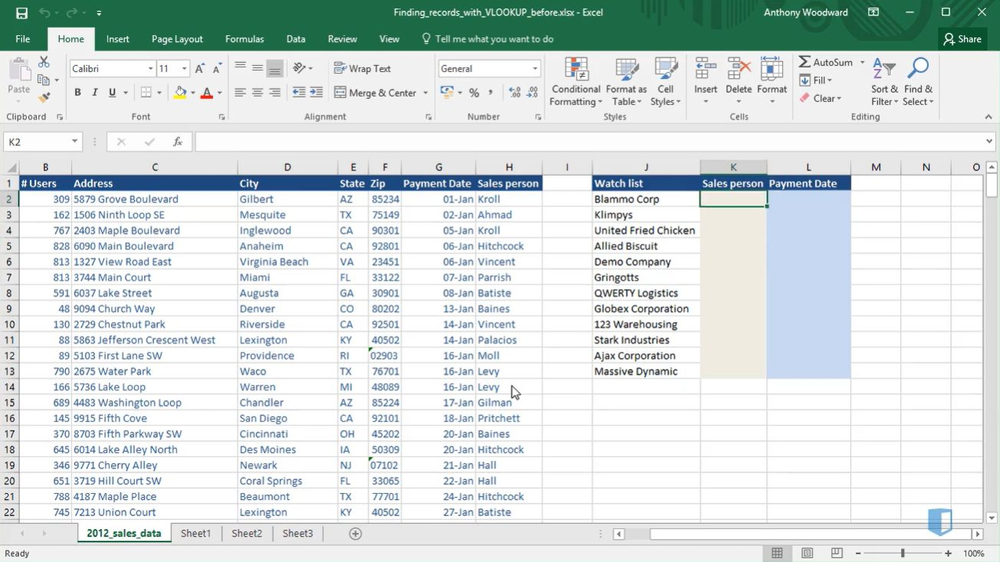
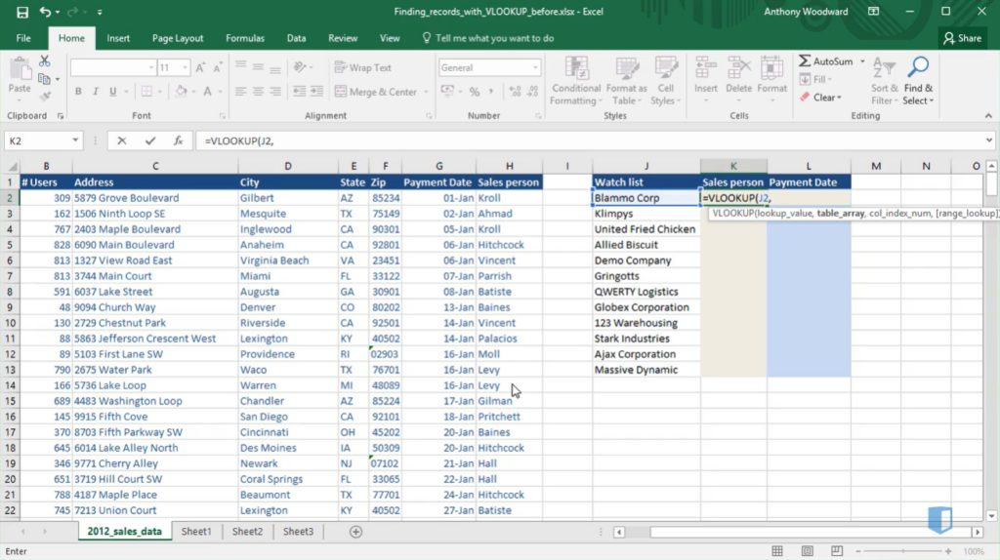
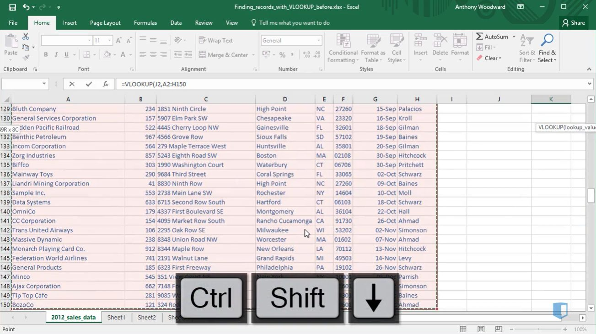
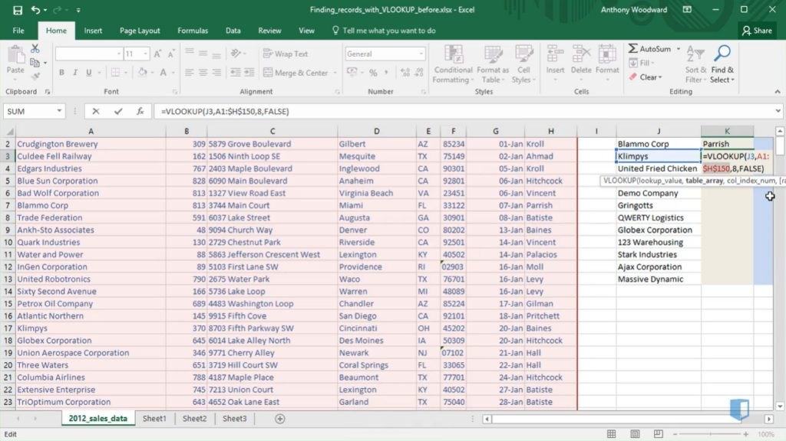
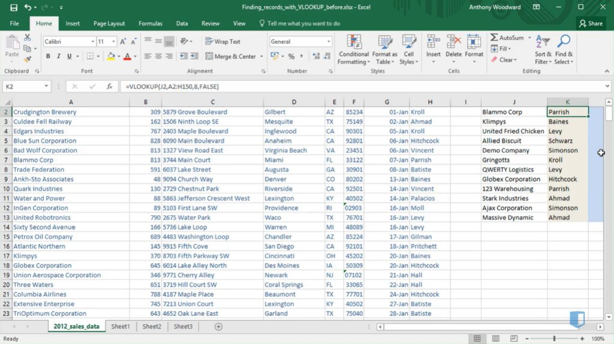

Using VLOOKUP successfully can feel like a major victory to many – and it should, it’s not one of Excel’s most straightforward functions to grasp; it takes practice to get it right.
VLOOKUP (Vertical Lookup) is simply a search function that identifies particular values of interest from a dataset – it’s often used when searching for information in a large spreadsheet: a name, email address, company, etc. You could use CTRL + F to search for these one by one, but it can be quite time consuming if you have a lot of data to search for!
Why would we use VLOOKUPs?
VLOOKUPs are extremely beneficial in any department of a company that works with spreadsheet data; some of the main reasons why we would use this formula could be:
- Matching data within a spreadsheet: One dataset might contain a watch list of customers likely to end their subscription the following year – a VLOOKUP would help you to quickly identify the Salespeople assigned to these companies so they can prioritize these accounts and perhaps offer them a discount.
- Comparing data between separate spreadsheets: One dataset might contain a master list of all the prospects in your CRM database, while the other is a list of leads from a recent Tradeshow event attended by the Sales team. You would probably want to know which of these leads on the Sales team’s list are existing leads in the CRM – a VLOOKUP would help you to identify this.
Performing the VLOOKUP function
In a nutshell, VLOOKUPs are a much more efficient way to perform searches or lookups in datasets based on specific criteria. Here’s how to do it:
- Firstly you must determine the information that you need, i.e. what you don’t already know. So let’s use the example above of the customers that are at risk of canceling their annual subscription. So we want to know which Salespeople are assigned to the companies on the watch list.

2. Next, we will type =VLOOKUP into the Salesperson column to the right of the Watch list column. The reason we type this in here is because this is the column where we want the result to appear.
After typing =VLOOKUP, we need to add the lookup value; this is the value which is common to both datasets, in this case Blammo Corp. (the company that is at risk of canceling its subscription) – we know that Blammo Corp. is on the watch list which is column J row 2, so we type (J2, – now our function looks like this: =VLOOKUP(J2,

3. Now we need to add the table array – this is the dataset against which you want Excel to find the information from. So we will simply select the full dataset on the left hand side because it is in this table that we will find the Salespeople who are assigned to each of these companies on the watch list. So now that we have selected the full dataset on the left hand side (type A2:H150,) the VLOOKUP function should look like this: =VLOOKUP(J2,A2:H150,

4. Almost there! Now we need to select the column number in which the data we’re looking for sits (in this case the Salesperson column). Excel will always assign the first column as index one, which means that the Salesperson index will be eight. Just type 8, into your function which should now look like this: =VLOOKUP(J2,A2:H150,8,. The final value we need to include is the range lookup which tells Excel that you want to find either an approximate match or an exact match. To find an exact match, which we want in this case, simply type FALSE and ). The entire function should now look like this:
=VLOOKUP(J2,A2:H150,8,FALSE)
Then you simply press enter to perform the function and see the result. If you have a number of rows to be filled in, simply anchor the array in the formula to calculate the result for the remaining cells. To do this, press F2 to go back into the VLOOKUP formula, navigate to the array (H150), press F4 and then Enter. The array should now look like this: $H$150.

Now simply copy and paste this function into the remaining empty cells below to see the results. The watch list will then be populated with the correct Salesperson data and the assigned company accounts.

VLOOKUP Limitations
It’s important to note that despite being an incredibly beneficial and efficient way to analyze datasets quickly, there are some limitations with VLOOKUPS:
- The VLOOKUP formula must be formatted in a certain way for it to work correctly; the lookup array must be on the left-hand side of the output. In other words, our formula would not have worked had the Salesperson column we were populating not been to the right of the lookup array, i.e. the dataset table we were drawing information from.
- Secondly, performing a VLOOKUP is not advised when working with very large datasets as it takes much longer to perform and in some cases even causes Excel to crash. If you are working with a large dataset of 20K+ rows, try using INDEX and MATCH lookups instead; while more complex to write, they offer much faster calculations.
Nonetheless, being able to perform the VLOOKUP formula can save Execs a huge amount of time and make their work far more efficient when using spreadsheets.
The information in this post was taken from the Lookups and Database Functions Excel course on Kubicle. You can get access to this course by signing up for our free trial.
Kubicle offers a range of courses in Excel: beginner to advanced
350+ lessons and 80+ exercises available
Topics Include: Excel Essentials | Data Analysis | Charts and Dashboards | Modeling for Business Investment Valuation | Macros and VBA | Power Pivot and Power Query Essentials | DAX in Power Pivot | Simulation in Excel | Financial Modeling Essentials | Advanced Financial Modeling
We offer a 7 day free trial to all learners. Sign up now!